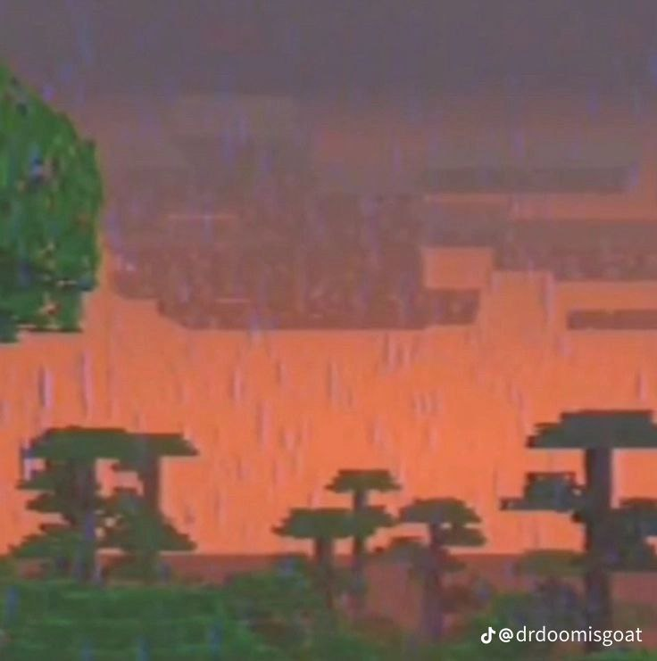
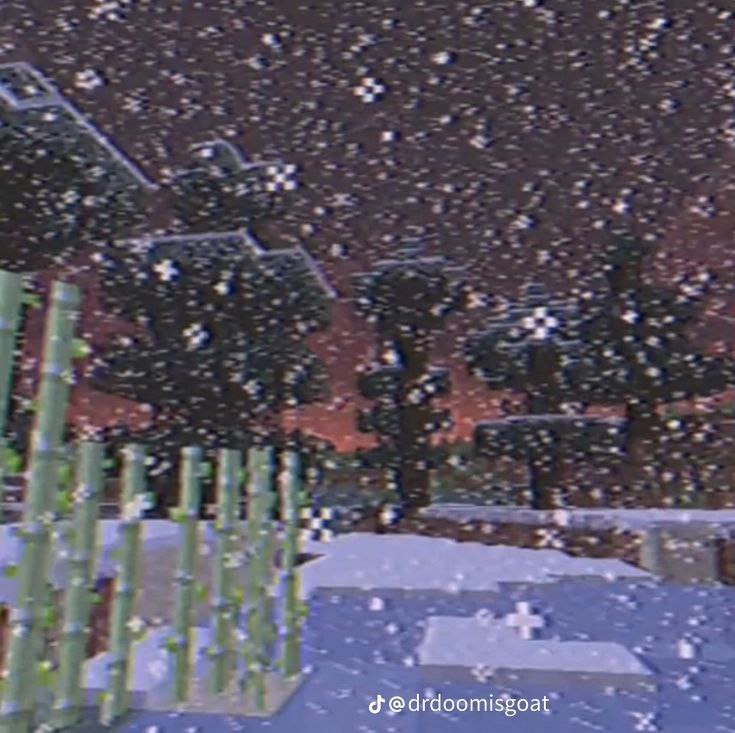
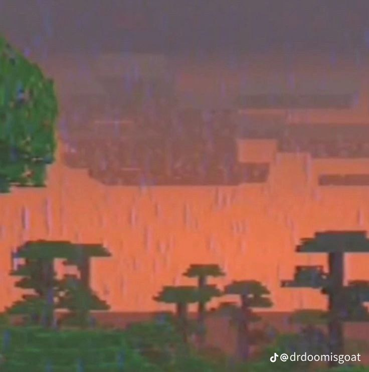
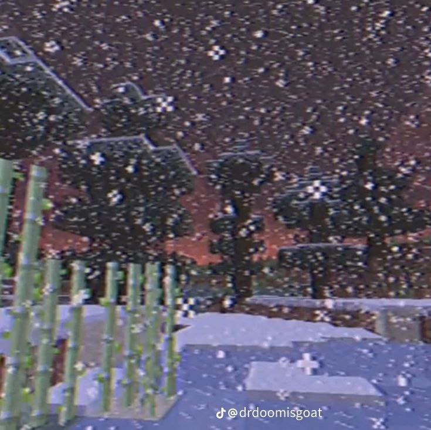

Welcome to Minecraft! Основи Minecraft дає в розпорядження гравцеві тривимірний процедурно генерований світ, що складається з кубічних блоків, які можливо використовувати на свій розсуд. Блоки поділяються на матеріали та об'єкти, котрі не обов'язково мають видиму кубічну форму, але займають умовний один кубик. Гра не ставить перед гравцем однозначних цілей, але пропонує безліч можливостей і занять: досліджувати світ, створювати різноманітні споруди й предмети, битися з різними супротивниками. Можлива як одноосібна гра, так і багатокористувацька, коли багато гравців взаємодіють в межах одного світу. У Minecraft можливо створити будь-який об'єкт, якщо мати вдосталь блоків відповідних матеріалів, деталей і рецептів. Головний спосіб отримання блоків — це знищення кубиків ґрунту, скель, дерев тощо, котрі автоматично складаються в інвентар. Деякі матеріали руйнуються тільки спеціальними знаряддями, які необхідно попередньо знайти або виготовити. Шляхом поєднання блоків і предметів згідно з рецептами можливо створювати нові блоки (створення нових блоків в Minecraft називається крафтом або крафтингом[5]). Наприклад, з блоків дерева створюються дошки, а з піску — камінь пісковик. Деякі блоки не можуть існувати самостійно, проте змінюють характеристики інших. До прикладу, жовтий барвник, отриманий з квітів, забарвлює такі матеріали, як бавовна та деякі інші. При кожній новій грі створюється новий світ з випадковим ландшафтом. Сам гравець має в світі гри втілення у вигляді персонажа — чоловічка (його, також, називають персонаж, гравець, чи Стів (Стів? включаючи знак питання[6]), як і все навколо, складеного з кубиків (пікселів). Він має загальний інвентар, поділений на комірки, куди складаються всі знахідки чи вироби, і особисте спорядження, таке як обладунки чи знаряддя і зброя. Кожна комірка вміщує від 16 до 64 однотипних блоків (одна заповнена тим чи іншим ресурсом комірка в інвентарі гравця зветься стаком (від англ. stack — «стос»)[7]). На екрані показується панель швидкого доступу, куди можливо покласти до 9-и найпотрібніших типів блоків (предметів чи знарядь). Ігровий світ населяють моби: тварини й фантастичні істоти. Деякі з них мирні та не завдають шкоди, інші можуть атакувати персонажа або псувати його творіння. Їх можна знищити, отримавши натомість незвичайні матеріали чи предмети. Режими гри У Minecraft є п'ять режимів гри: Творчість (англ. Creative), Виживання (англ. Survival), Пригода (англ. Adventure), Хардкор (англ. Hardcore) і Спостерігач (англ. Spectator). Творчість. Цей режим пропонує мінімум обмежень і передбачає безперешкодне створення будь-яких об'єктів. Гравці одразу ж отримують нескінченну кількість всіх видів блоків і спорядження. Усі блоки знищуються з одного удару, незалежно від знаряддя в руках. Завдяки цьому гравці можуть створювати як величезні тривимірні будівлі на кшталт замків, так і займатися піксель-артом — створенням двовимірних картинок з різнокольорових блоків. У творчому режимі також можна легко створювати автоматичні механізми з використанням особливого матеріалу — редстоуну, що передає сигнали. Персонаж у режимі «Творчості» не може померти, виняток — падіння в порожнечу, простір, який обмежує ігровий світ або за допомогою спеціальної команди /kill). З версії Minecraft beta 1.8 він може літати, якщо гравець двічі натисне клавішу стрибка (зазвичай Пробіл). Монстри в цьому режимі не завдають ніякої шкоди. Це єдиний доступний режим у класичних версіях Minecraft і основний для гри. Також він доступний у бета-версії після оновлення Adventure Update. Виживання. Щоб виконати свій задум, гравець повинен подорожувати і шукати потрібні блоки, боротися з мобами, вести господарство, виготовляти нові матеріали і майструвати інструменти. Тут персонаж має, крім інвентаря, шкали здоров'я, голоду і досвіду. Здоров'я представлене символами сердечок, які втрачаються, коли персонаж зазнає атаки, падає з великої висоти, потрапляє у лаву, зазнає інших ушкоджень. Поповнюється здоров'я споживанням їжі. Голод представлений символами курячих ніжок, які поступово автоматично споживаються. Коли їх не лишається, їжа перестає поповнювати запас здоров'я. Опинившись під водою, чоловічок може перебувати в ній, поки не вичерпає запас повітря (відображається у вигляді бульбашок). Зі знищенням ворогів (особисто, але не через дію оточення) з них випадають сфери досвіду, котрі слід піднімати, щоб заповнити шкалу досвіду. Пізніше він застосовується, щоб зачаровувати предмети, надаючи їм спеціальних властивостей, або ремонтувати їх. В разі вичерпання здоров'я (смерті) гравцеві пропонується відродити персонажа на початковій точці спавну (появи), але тоді він втратить весь вміст інвентаря, також йому пропонують вийти в головне меню. Пригода. Режим, заснований на настільних рольових іграх. Тут немає змоги руйнувати чи встановлювати блоки, але можна подорожувати і взаємодіяти з предметами і мобами. Хардкор. Подібний на «Виживання» за винятком того, що діє найважча складність — коли здоров'я персонажа вичерпається, він не може відродитися. Після його загибелі гравцеві пропонується одразу видалити всю свою працю і почати заново, або оглянути перед цим світ. Спостерігач. В цьому режимі гравці можуть літати як у «Творчості», але мають здатність пролітати крізь блоки і дивитись від особи будь-якого гравця або істоти. Однак, гравці не можуть встановлювати й знищувати блоки. В цьому режимі, як і «Творчості», можна померти, лише залетівши за межі світу або набравши спеціальну команду /kill. Режим польоту неможливо вимкнути. При польоті крізь тверді блоки видно найближчі порожнини в товщі блоків.